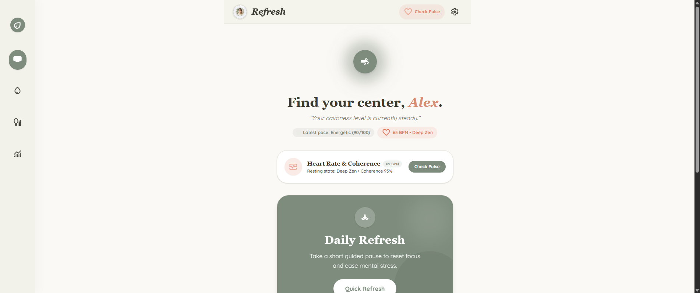

Featured Web Projects

Tic Tac Toe Arena
A responsive Tic-Tac-Toe web game developed using HTML, CSS and JavaScript with dynamic win logic and scoreboard.

Rock Paper Scissor Battle
A fun interactive Rock Paper Scissor game built using HTML, CSS, and JavaScript with animated moves and streak counts.

Currency Exchanger
A real-time currency exchange converter application built using HTML, CSS, JavaScript, and external exchange rate APIs.

Atmospheric Weather App
A live weather forecast application fetching meteorological metrics, humidity levels, and worldwide city conditions.

PujoNavigate Guide
A crowd navigation, AI route planning, and accessibility guide for Kolkata Durga Puja and Barasat Kali Puja with real-time transit & pandal circuits.

Serene Pulse — Mindful Health Tracker
A responsive, offline-first wellness app featuring interactive guided breathing exercises, heart rate tracking, mindful mood logs, and AI-powered health insights.